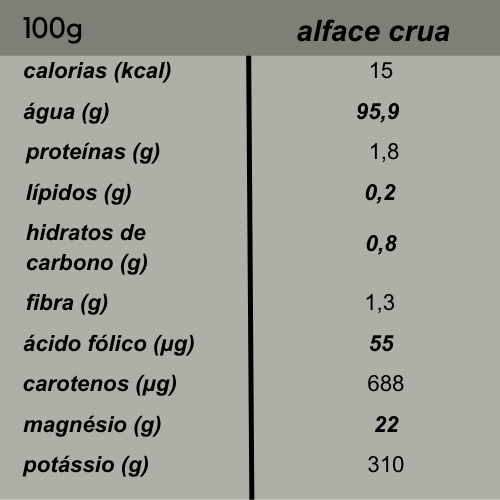
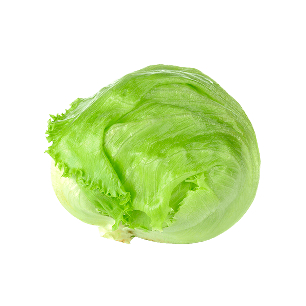
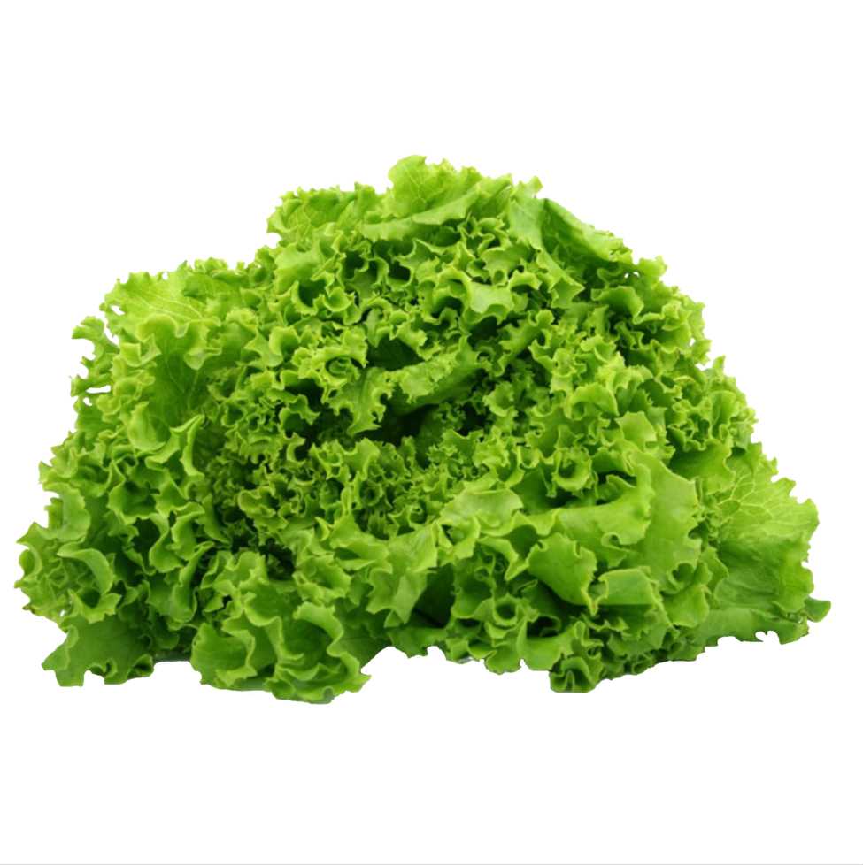
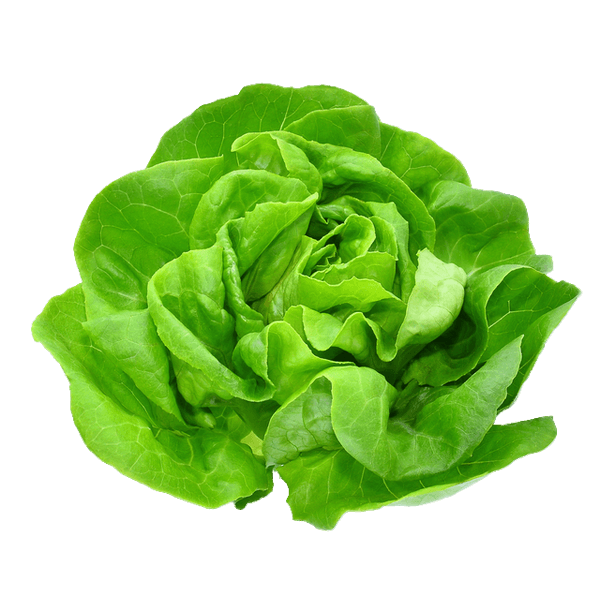
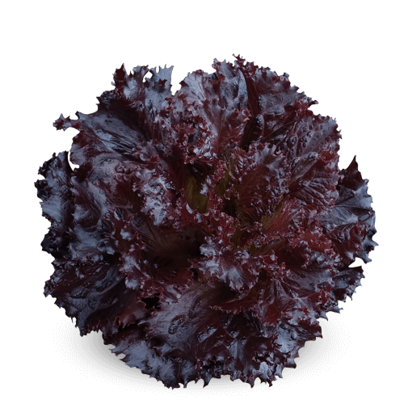
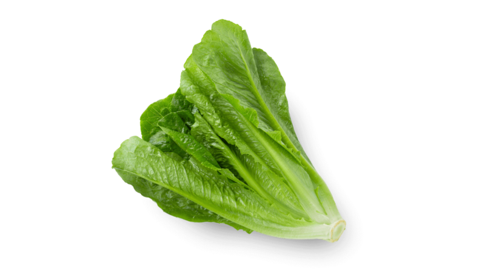
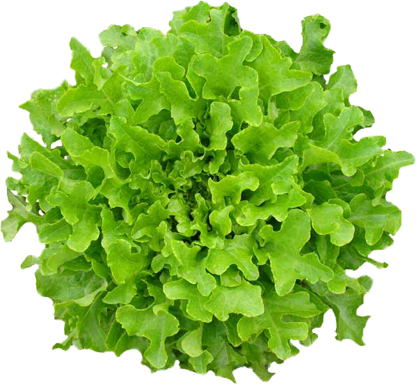
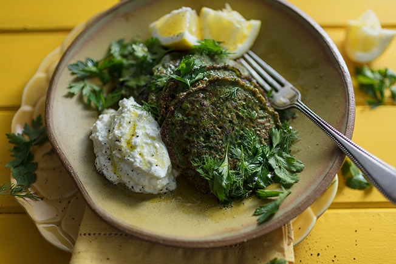
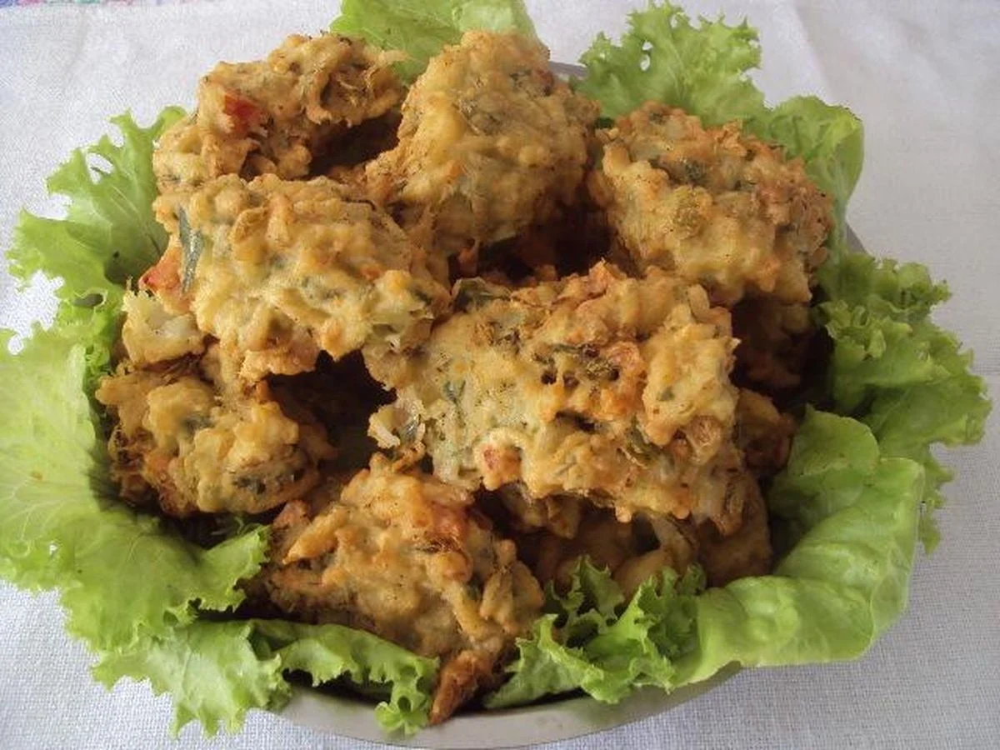

Tabela Nutricional

Alguns tipos de alface
Alface Americana

Sabor leve, tem folhas de cor verde bem claro, possui textura firme e formato grande e arredondado. Entre os tipos de alface, esse é o que tem menor índice de vitaminas.
Alface Crespa

Como seu próprio nome sugere, essa alface possue folhas mais enrugadas e destaca-se por ter fósforo e cálcio em sua composição.
Alface Lisa

Tem um amargor levemente acentuado. Não é crocante como os outros tipos. Contém bastante cálcio e potássio. É bastante utilizada em lanches e hambúrgueres.
Alface Roxa

Reconhecida por ter as pontas de suas folhas roxas, essa alface contém antocianina, pigmento de efeito antioxidante. Ele blinda as células de agressões, favorecendo a longevidade.
Alface Romana

Essa alface tem folhas levemente crocantes, não tão rígidas e mais escuras. É fonte de vitamina K e magnésio.
Alface Mimosa

Tem aspecto delicado e pode apresentar suas pontas na cor roxa. Tem um amargor mais aparente e contém vitaminas A, B e C.
Como fazer o plantio do alface
1-Abra covas de aproximadamente 10 cm de profundidade e 8 cm de largura.
2-Coloque 3 sementes juntas e feche os buracos com uma camada de terra.
3-Espere a germinação (aproximadamente 15 dias).
4-Irrigue, com intervalo de um dia, sua planta (Cuidado para não encharcar o solo).
5-Após 50 dias do início do plantio, é hora da colheita. Basta cavar ao redor da planta e puxá-la.
(Época de colheita: No verão, a colheita ocorre em períodos de 60 a 70 dias depois do início do cultivo e, no inverno, se estende em torno de 80 a 90 dias.)
Panqueca de Alface

⠀⠀⠀⠀⠀⠀⠀⠀Ingredientes
- ½ maço de alface-romana (10 folhas)
- ⅔ de xícara (chá) de coentro (½ maço)
- ¾ de xícara (chá) de salsinha (½ maço)
- ⅓ de xícara (chá) de endro (dill) (½ maço)
- 2 ovos
- 2 dentes de alho
- 3 colheres (sopa) de farinha de trigo
- ½ colher (chá) de açúcar
- ½ colher (chá) de sal
- noz-moscada ralada na hora a gosto
- pimenta-do-reino moída na hora a gosto
- azeite a gosto
Modo de preparo
Coloque uma folha de alface sobre a outra e corte em fatias grossas. Descarte a base grossa dos talos das ervas. Descasque os dentes de alho. Numa tigela, quebre um ovo de cada vez e transfira para o processador. Junte a alface, as ervas, os dentes de alho e bata até triturar bem. Acrescente a farinha de trigo, o açúcar, tempere com ½ colher (chá) de sal, noz-moscada e pimenta a gosto. Bata até formar uma massa líquida e transfira para uma tigela. Leve uma frigideira grande ao fogo médio. Quando aquecer, regue com ½ colher (sopa) de azeite e prepare as panquecas: com uma concha pequena, misture delicadamente a massa e transfira uma porção para a frigideira, formando um disco pequeno. Deixe dourar por 2 minutos, até soltar da frigideira. Vire com uma espátula, abaixe o fogo e deixe dourar do outro lado.
Bolinho de Alface

⠀⠀⠀⠀⠀⠀⠀
Ingredientes
- 1 pé de alface
- 1 xícara de banha
- 4 ovos
- 1 xícara de água
- Sal a gosto
- Farinha até o ponto
Modo de preparo
Lave o alface, corte e misture com os ovos, o sal e a água. Coloque a farinha até a massa ficar homogênea. Coloque a banha em uma frigideira e deixe esquentar. Frite os bolinhos e sirva.
Breno Tanaka 2023 - ©Todos os direitos reservados